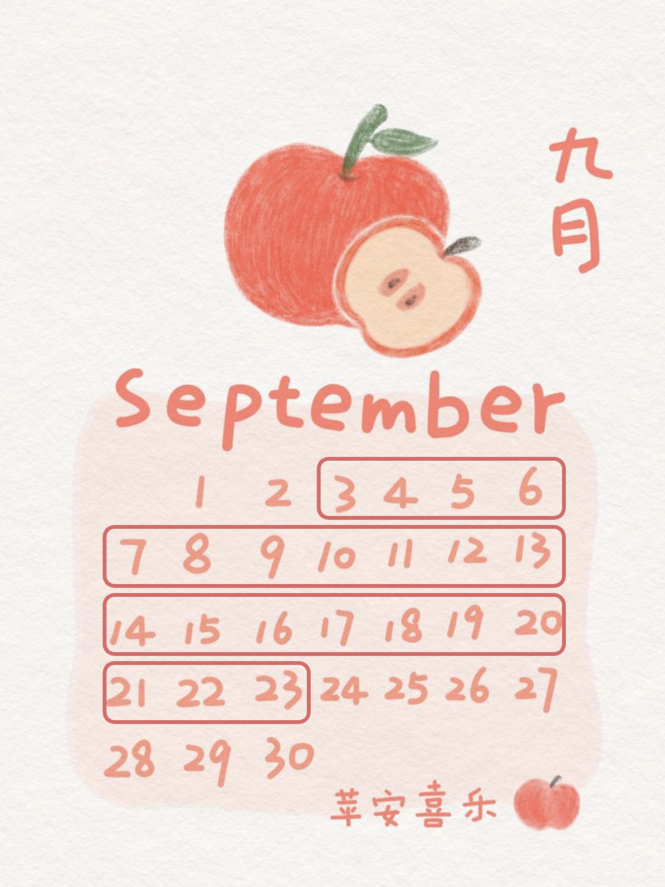
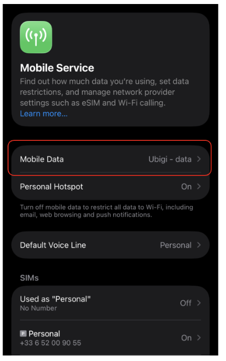
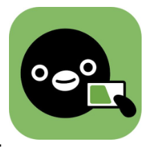
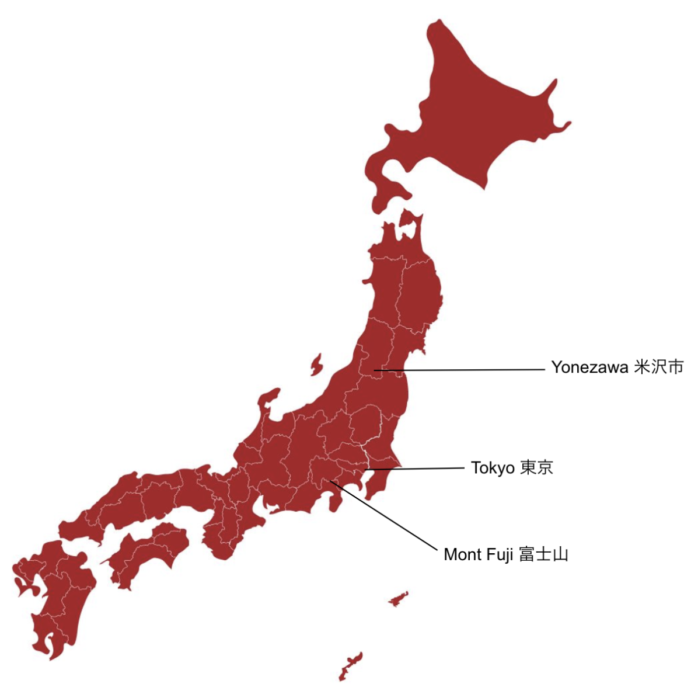

プラゼザンキ家の日本旅行
Un guide pour de
supers vacances
au Japon
Bienvenue dans ce petit e-book de préparation à votre voyage — tout ce qu'il faut savoir avant de venir nous voir à Yonezawa !
Commencer la lectureimages/hero.jpg

Avant de partir
Quelques préparatifs et petits plaisirs pour se mettre dans l'ambiance avant le grand départ.
☀️ Météo prévue
images/meteo.jpg
👕 Vêtements importants
- Maillot de bain — pas de « parachute » pour les hommes (short classique), plutôt une pièce pour les femmes
- Chaussures confortables pour marcher longtemps — pas besoin de chaussures de randonnée, mais privilégiez le confort
🎬 Films et livres avant de venir
- Le livre Tokyo
- Le Voyage de Chihiro
- The Birth of Sake — à regarder ici
📱 Applications utiles
- Google Traduction — pensez à la fonction caméra (traduction en temps réel des panneaux et menus)
🈁 Apprendre un peu de japonais ?
- Konbini (コンビニ) — supérette de quartier, à connaître avant d'arriver !
Administratif
Les démarches à faire avant le départ, dans l'ordre où on y pense généralement.
🛂 Passeport
Valide jusqu'à votre retour en France.
📲 QR code d'entrée
À créer sur Visit Japan Web (création d'un compte puis enregistrement des informations de voyage).
Ce QR code vous sera demandé à l'aéroport à votre arrivée. Préparez-le en amont pour éviter les galères d'internet sur place et avoir le temps de tout remplir tranquillement.
📶 eSIM — Ubigi
Pour avoir internet au Japon, j'utilise personnellement Ubigi. Si vous connaissez votre consommation actuelle en France, ça donne un bon indicateur — en gardant en tête qu'on utilise un peu plus son téléphone en voyage (traduction, GPS...).
| Forfait (30 jours) | Prix |
|---|---|
| 1 Go | 4 € |
| 10 Go | 16,50 € |
| 25 Go | 32 € |
| 50 Go | 55 € |
| Illimité | 65 € |
⚠️ Une fois l'eSIM ajoutée à votre téléphone, vérifiez bien à l'arrivée que vous utilisez internet via ce forfait et non votre forfait français (Réglages → Données cellulaires) — sinon les dépassements en itinérance peuvent coûter très cher très vite. Un numéro de téléphone japonais n'est pas nécessaire, mais l'accès à internet est très pratique.

Les transports
Shinkansen, métro, voiture : comment se déplacer une fois sur place.
🚄 Le Shinkansen
Pour voyager en Shinkansen (l'équivalent du TGV) à travers le Japon, certaines lignes ont des sites de réservation en ligne, d'autres non — certains billets s'achètent donc directement en gare.
Vous pouvez voyager debout même si les places assises sont épuisées, tant que le train comprend des wagons sans réservation.
Le prix des billets est toujours le même, que vous réserviez 3 semaines à l'avance ou 30 minutes avant le départ.

Le métro & la carte SuicaÀ Tokyo notamment, le métro est l'une des meilleures façons de se déplacer dans la ville.
Carte de métro dématérialisée — la Suica :
- Ouvrir l'application « Wallet » / « Cartes » sur iPhone
- Cliquer sur le petit « + »
- Sélectionner « Carte de transport » → « Japon » → « Suica »
- Ajouter une nouvelle carte, puis la recharger directement avec votre carte bancaire
💡 Astuce : cette carte permet aussi d'y ajouter ses billets de Shinkansen, et de payer au konbini ou même parfois au restaurant !
🚗 En voiture, Simone !
Pour conduire, il faut faire traduire son permis français en permis japonais, faisable en ligne ici (il faut être au Japon pour le faire, mais un VPN fonctionne bien). Il faudra ensuite l'imprimer dans un konbini sur place.
Infos utiles pour vos démarches
À garder sous la main (ou en photo sur votre téléphone) pour l'arrivée.
🏠 Adresse — Lysandre et Louisa
〒992-0057 山形県米沢市成島町１丁目４−13 プレジデンシャル 102
992-0057, Yamagata-ken, Yonezawa-shi, Narushimamachi 1 chome 4-13, Presidential 102
🗾 Où nous trouver
Yonezawa se trouve dans la préfecture de Yamagata, à quelques heures de Shinkansen au nord de Tokyo.

☎️ Numéros japonais
- Louisa : 080 7300 1194
- Lysandre : 080 7973 9933
🈶 Vos noms en japonais
- Emmanuelle Praszezynki : プラゼザンキ エマニュエル
- Mathieu Praszezynki : プラゼザンキ マティウ
Le climat
À quoi s'attendre côté météo, et quoi faire en cas de séisme.
🌡️ Températures moyennes en septembre
images/temperatures.jpg
🚨 Alertes tremblements de terre
Utilisez l'application NERV pour les alertes séismes et tsunamis en temps réel.
📲 Pensez aussi à télécharger l'application Safety Tips avant de venir, pour les alertes officielles en anglais.
Culture
Quelques clés pour comprendre les codes sur place — et en profiter sereinement.
🤫 « Ne pas déranger l'autre »
La culture japonaise repose sur ce principe. C'est assez différent de la nôtre et ça se ressent de manière subtile : un accent fort sur le respect, donc sur le silence. Très visible dans le métro, mais aussi partout où l'on partage un espace fermé (ascenseurs, cafés...).
Si un restaurant semble réticent à vous servir alors qu'il y a des places libres, c'est en général parce que le personnel ne parle pas anglais et ne veut pas vous mettre dans une situation inconfortable — pas un refus personnel.
Il faudra un peu de temps pour s'adapter : même si les Français sont plutôt discrets, on est en général plus bruyants que les Japonais. Et comme on ne vous dira jamais directement que vous faites quelque chose de travers, le mieux est d'essayer d'être aussi respectueux que possible dès le départ.
🔗 Ça vaut vraiment le coup de se renseigner sur les codes de politesse à l'avance : guide des bonnes manières au Japon.
✈️ Petite anecdote
Dans l'avion pour le Japon, le mont Fuji apparaît côté gauche — un joli coup d'œil depuis le ciel si vous avez une place côté hublot !